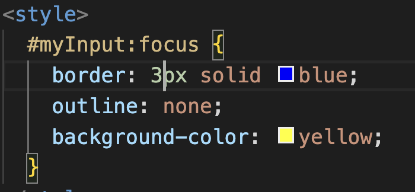
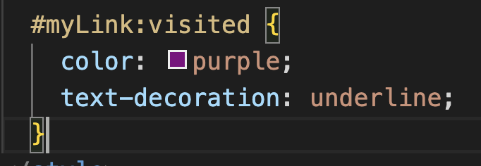
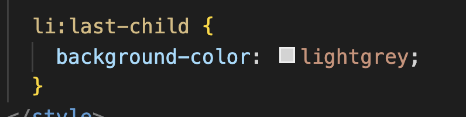

Pseudo classes are added to CSS to target elements based on their state or position in the document tree.
:hover: selects an element when the mouse cursor is hovering over it.
:active: selects elements when they are in an active state, such as a button being clicked and held down.
:focus: selects the element that currently has keyboard focus, usually after it has been clicked or selected by the user.

:visited: selects links that have been visited.
Module-02

:nth-child: this pseudo-selector is used to select elements based on their position in the parent container. It takes an argument such as a number or an expression enclosed in parentheses. We can target odd or any desired elements within that container.
:first-child: and :last-child: select the first and last child elements of the parent, respectively.
